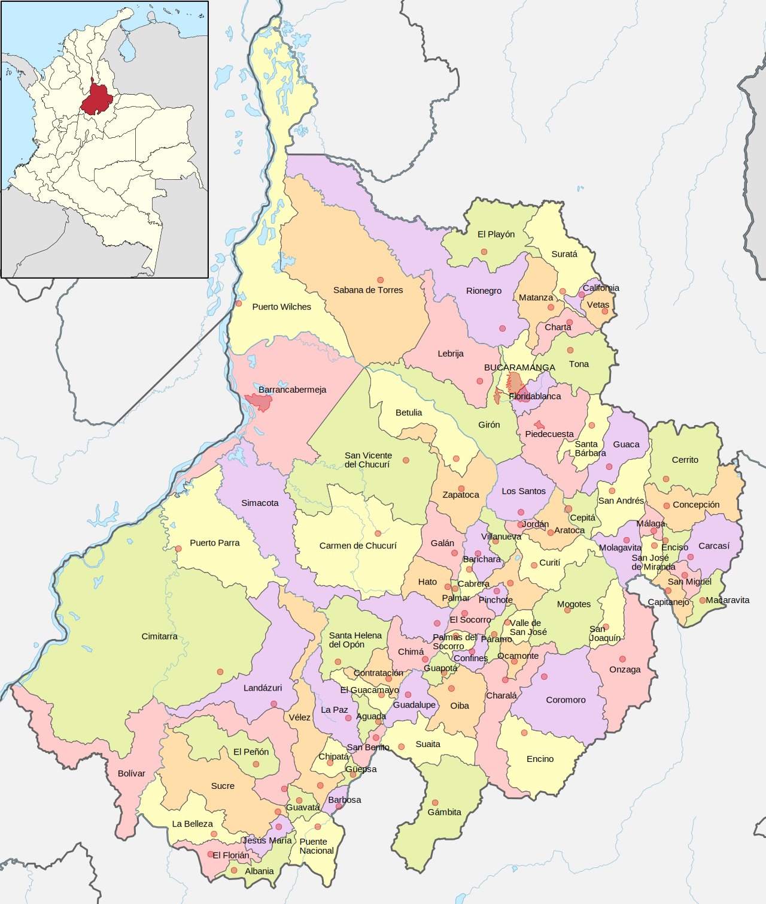

SANTANDER

El departamento de Santander, ubicado en el noreste de Colombia, es conocido por su rica historia, paisajes montañosos y una cultura vibrante. Su capital es Bucaramanga, a menudo llamada "la Ciudad Bonita" por su clima templado y su belleza natural.
Geografía
Santander se caracteriza por su variada geografía que incluye montañas, valles, ríos y cañones. Está atravesado por la Cordillera Oriental de los Andes, lo que da lugar a paisajes espectaculares. El cañón del Chicamocha es uno de los atractivos naturales más impresionantes de la región, ofreciendo vistas panorámicas y oportunidades para actividades al aire libre como el parapente y el senderismo.
El clima varía según la altitud, con temperaturas que oscilan entre cálidas y templadas en las zonas bajas y frescas en las montañas.
Historia
La historia de Santander está marcada por la llegada de los españoles en el siglo XVI, así como por la influencia de las comunidades indígenas, especialmente los guanes. Durante la independencia de Colombia en el siglo XIX, Santander fue un bastión de luchas y movimientos revolucionarios. La figura de Francisco de Miranda, un importante líder de la independencia, está asociada con la región.
Cultura
La cultura santandereana es rica y variada, con tradiciones que reflejan la mezcla de influencias indígenas y españolas. La música es un componente esencial de la vida en Santander, con ritmos como el "bambuco" y la "gaita" que se celebran en festivales y reuniones familiares.
La gastronomía es igualmente diversa, con platos típicos como el "mute" (una sopa de maíz y carne), la "arepa de huevo" y las "empanadas". La cultura del café también es significativa, ya que muchas familias se dedican a la producción de café de alta calidad.
Economía
La economía de Santander se basa en la agricultura, la ganadería y la industria. Los cultivos de café, caña de azúcar, tabaco y frutas son comunes. Bucaramanga es un centro comercial e industrial importante, con una economía en crecimiento que incluye sectores como la manufactura, la construcción y el turismo.
Turismo
Santander es un destino turístico atractivo, con una variedad de lugares para visitar:
Cañón del Chicamocha:
Un impresionante cañón que ofrece actividades como el parapente y un teleférico que conecta con el Parque Nacional del Chicamocha.
Bucaramanga:
La capital, con sus parques, centros comerciales y arquitectura moderna.
Parque Natural de los Yariguíes:
Un espacio protegido que alberga una rica biodiversidad y es ideal para el senderismo.
San Gil:
Conocida como la capital de la aventura, ofrece actividades como rafting, rappel y senderismo en sus alrededores.
Desafíos
A pesar de sus muchas virtudes, Santander enfrenta desafíos como la pobreza en algunas áreas rurales y problemas de infraestructura. Sin embargo, el departamento ha trabajado en el desarrollo de sus comunidades y en la promoción de su potencial turístico y económico.
SI DESEA VOLVER A LA PAGINA PRINCIPAL, DE CLICK AQUI